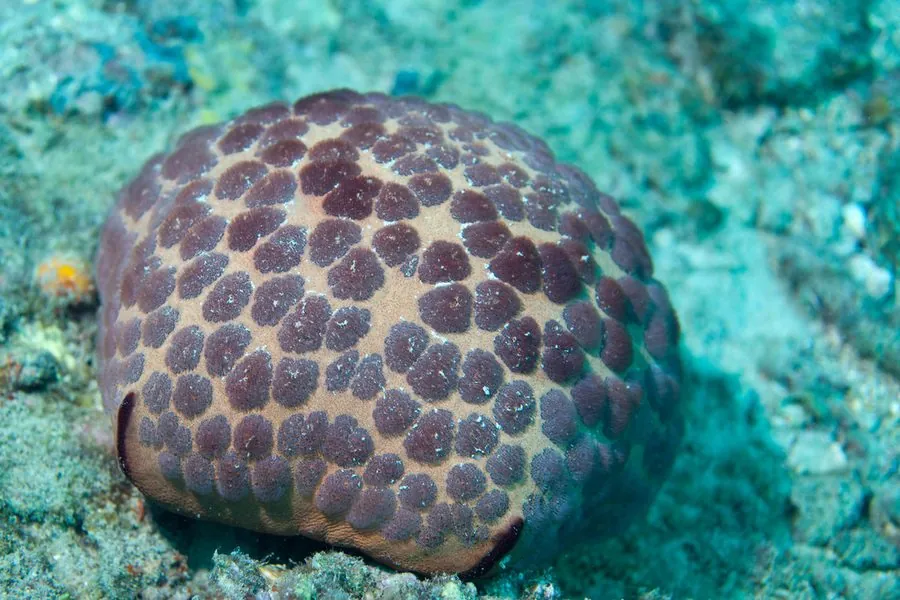

其他无脊椎动物 · 动物界
面包海星 Culcita novaeguineae

印度洋—太平洋珊瑚礁的海星，身体膨大呈五角面包状，表面布满小颗粒，以珊瑚和底栖小动物为食。
- 分类
- 门棘皮动物门纲海星纲目瓣海星目科面包海星科属面包海星属
- 栖息环境
- 热带珊瑚礁的礁坪、潟湖和浅水礁坡，水深 0–30 米
- 地理分布
- 印度洋—太平洋热带海域，从东非到太平洋岛屿
- 保护级别
- IUCN 暂无评估
物种志
面包海星的身体膨大呈五角形或球形，直径 15–25 厘米，五条腕几乎完全愈合，看起来像一个圆鼓鼓的面包。表面布满小颗粒和细小的棘刺，体色多变，从黄褐色、绿褐色到灰黑色都有，常带深色斑块。
它分布于印度洋—太平洋的珊瑚礁，常见于礁坪、潟湖和浅水礁坡，水深 0–30 米，白天藏在珊瑚缝隙和岩石下，夜间出来活动。面包海星以珊瑚虫、海绵、软体动物和有机碎屑为食，幼体形态与成体差异很大，常隐藏在礁石缝隙中。它行动缓慢，靠管足在礁面上移动。面包海星对珊瑚礁生态有一定影响，但一般不造成大规模破坏；它因外形可爱常被潜水者拍摄，采集和贸易需遵守当地法规。
形态与习性
- 体径约 15–25 cm
- 形态五腕愈合，身体膨大呈五角面包状
- 食性珊瑚虫、海绵、软体动物和有机碎屑
- 活动节律夜行性，白天藏在珊瑚缝隙和岩石下
- 水深常见于 0–30 m 的礁坪和潟湖
- 运动靠管足缓慢移动
趣味知识
- 面包海星五条腕几乎完全愈合，整个身体像一个圆面包。
- 它的幼体和成体外形差异很大，幼体常藏在礁石缝里。
- 面包海星行动很慢，一天移动的距离通常只有几米。